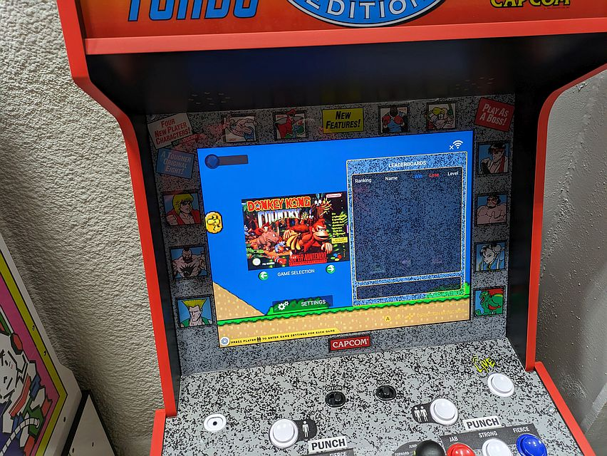
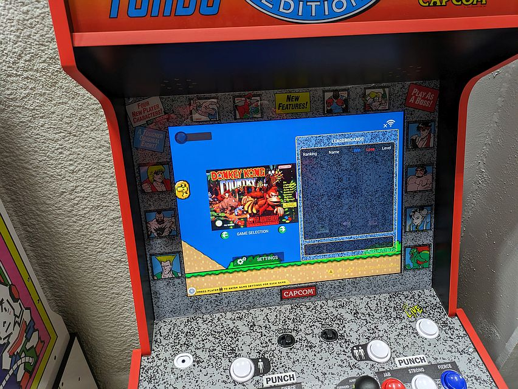

An arcade/rec center recently opened where I live named Keep On Gaming LLC . I had the privilege of attending its soft opening after the locale's tumultuous battle to even get its business license. Afterwards, Google Maps asked me to leave a review of the place, and I couldn't think of what I wanted to say at first.
. I had the privilege of attending its soft opening after the locale's tumultuous battle to even get its business license. Afterwards, Google Maps asked me to leave a review of the place, and I couldn't think of what I wanted to say at first.
It has been a while since that day. I've been thinking about what I want to write for quite a while now, but I've finally decided.
I have way too much to say about this place.
Good Start
My review sways positive. The reason being that I want to encourage this kind of business—especially in a town like this which not only benefits from the college and family town convergence, but also could sorely benefit from recreational activity centers like this.
Ages ago, when I worked for Subway, I often got teens and collegiate young adults asking if there was "anything to do around here" at the start of a semester, unable to suggest anything beyond good eateries. This was always something that would weigh on my mind as an unfulfilled niche for the town.
It's good to see somebody else having a similar idea. The existing arcade is a childish ticket muncher associated with a roller rink, and the only equivalent experience I can think of beyond that is a bowling alley.
The Role Of The Arcade
There's something to be said about the arcade as an experience.
Part of the allure of an arcade is the ability to do something that you otherwise would not be able to due to space, logistics, or costs. The modern, popular example would be VR setups with exclusive, arcade-specific games, and the vintage equivalent would be Pinball or simulator cabinets that are too prohibitively expensive. Anywhere can have an arcade cabinet, but you can't fit a whole The House of the Dead 2 Deluxe cabinet in a pizza joint.
cabinet in a pizza joint.
Image cribbed without permission from Game and Sport World
Another would be a museum-like quality associated with classic or historic video games. An unintended side effect in the medium of the arcade game is a shortsightedness with regards to its preservation. Arcade machines were primarily designed to make money first and were never considered be a piece of stagnant, preserved art that would last for years. As a result, modern arcades tend to 50/50 between real arcade hardware and restorations or emulations using MAME or hooking the PCBs up to better CRTs or less-flimsy housings.
The intention, of course, being that allure of playing a classic game as designed, start to finish. Physical, interactable history.
As an example, this video by TNT Amusements provides a great breakdown of how they mitigated the problems with 720°'s top-heavy cabinet for a restoration project.
(The whole video's great, but the thing I'm specifically talking about starts at 4:58.)
I believe this area of "being a proper arcade" is what makes Keep On Gaming fall flat.
The Winners
I took note of what people were drawn to. Most played billiards, a game that is often difficult to find in the wild as it tends to be associated with bars and other adult establishments, so it makes sense that would be the big winner.
The Sim Racer Setups
The second most popular items were the custom sim racer setups. For my money, this is the big ticket item for Keep On Gaming. These stations were constantly filled, had readily-set-up games where people could hop in, but had a high skill ceiling that challenged players. If a reasonable arcade sim or a manual leaderboard system could be set up this would definitely keep repeat customers as players jockey for fast times, perhaps with different tracks every week or month.
I speak of this mostly from personal anecdotes. Among users in the arcade-game-centric chatroom I inhabit, a popular hot-ticket item is WANGAN MIDNIGHT MAXIMUM TUNE 5, an arcade racer in the Wangan franchise by Namco. Users can play online versus others, but most importantly you can save your fastest time and challenge friends to beat it. Challenge and competition breed repeat play, and if the payment model of the establishment is pay-once-play-all, having something enticing like this for repeat customers is within their best interest.
This would fit the primary theme of "Arcade as Cost-effective Experience" as I had previously mentioned. The Sim Racer setups are wholly custom builds with high quality controllers, force-feedback setup, and last-gen—but still modern—consoles. All of these things are prohibitively expensive for a single person to purchase, but at 10 dollars a pop these setups are an alluring prospect for a night of fun.
When I stopped by a second time there was a similar setup for flight sims using a HOTAS which seems an equal option for high quality machines. I don't know what games are planned to run on this setup other than Ace Combat, but it would be a fun little thing to see, especially if they could get two running against each other.
Oh wait, they can't run two of them connected for multiplayer. The building has no internet.
Arcade Competition and The Internet
KOG seems unwilling to consider any of these machines in a competitive aspect whatsoever. It feels like the idea started and ended at "If you build it they will come."
No Wi-Fi means no arcade livestreams—these are popular on Tiktok, Twitch.TV, and the previously-popular Periscope (soon to be X Live) and would be a great advertising gamut. The machines aren't linked to any router and definitely not linked to each other, so competitive gameplay among the sim racing setups is completely impossible. Even outside of that, many modern consoles require internet connectivity and subscription to make the most of the experience. Without Xbox Live, Forza Horizons—which KOG touts out quite often—is bereft of life. It's like driving through a ghost town of RC cars.
This leaves AI races and time attack. The former become woefully exploitable and predictable with modern video games. (Especially ones with assists.) The latter, without a leaderboard, leaves it entirely up to you to take a photo of your time and call it a day.
I understand the intention of no WiFi is to "get offline and play couch co-op in person" but if the building is particularly quiet and you don't have a friend to bring there's very little to entice you beyond score chasing. And if it is busy, why even go to the single-player sim racing setups anyway if it's gonna take 30 minutes to play two qualifiers and a main event in SRX: The Game? It will take an hour to compare times for a single 37 lap event with the easy-mode AI bumbling around.
Linked sim racer setups are a staple of the arcade, from the massive 8-player Daytona USA cabinet from 1994 to the much less impressive 8-player Fast & Furious: Super Bikes by Raw Thrills. It allows players to hop on and compete to add an additional layer of difficulty into a game without needing specific, explicit consent to do so like saying "I got next" in a fighting game.
to the much less impressive 8-player Fast & Furious: Super Bikes by Raw Thrills. It allows players to hop on and compete to add an additional layer of difficulty into a game without needing specific, explicit consent to do so like saying "I got next" in a fighting game.
The whole sim setup seems half-baked at best. The fact that it's the most enticing thing should reveal just how poorly the rest of the building is planned out even before I continue.
The Arcade Cabinets
They're not real.
Enter Arcade1Up
Let me explain. Arcade1Up is a production company that seeks to recreate retro arcade machines in an affordable, mass-produceable way, usually for home use more than business use. Their machines are 3/4 the scale of a real arcade cabinet, often have cheap, easily-acquireable parts (the buttons are actually mechanical keyboard keycaps) and reproduceable fiberglass. The intention was to create cheap and accessible options to play classic arcade games in a format similar to their original design, usually for enthusiasts and collectors who want to support these kinds of classic games. I would compare their business favorably to the modern day Stern Pinball

But the thing about an Arcade1Up cabinet is that it's not a "real" cabinet. It's real in the sense that it exists, has a video game, and you can play it. However, it isn't how those games originally shipped, if you understand.
The DIP switches—or a facsimile of these operator-only settings—can be immediately accessed by the player, destroying any mistique or challenge the cabinet might set for players and making score-chasing and leaderboards completely irrelevant. Why show off your score on Mortal Kombat II if your contemporary doubled it by setting the cabinet to Difficulty 0?
The design of the cabinets are painfuly sandwiched between modern sensibilities and throwback archival. Buttons on 4-player cabinets can sometimes be at awkward positions for certain games to keep the theming and classic touch of playing these games for real, but additional buttons like a volume knob, a gigantic "LIVE" button to immediately activate online play, and a headphone plug completely break any sort of immersion this design decision was intended to evoke. (Real arcade machines hid the volume knobs in a coin door. You could just make an aesthetic, swing-out door to hide these buttons. Why didn't they do that?)

Image by New_1uper on Reddit.
Classic arcade cabinets are unique in that they can teach a player immediately how to play through a Control Panel Overlay and specifically labeled buttons, but in a system with multiple games—especially multiple games with multiple control layouts—the button layouts have to be universal to make sense. Fire and SuperZapper in Tempest are actually Rotate Left and Rotate Right in Gravitar. How many kids are going to sit at the machine with a giant trackball in the center, a dial on the side, two buttons on the left and three on the right, and confusedly spin every single control scheme wondering why they aren't getting any results?
The screens are LEDs instead of CRT TV screens—particularly evident on games with a lot of 60hz flicker. Any Atari vector game is rendered out with raster graphics instead, and without that particular "glow" things like player bullets are prohibitively small and hard to see. Just try playing Asteroids when the "one vertex wide" bullets are 1 pixel wide instead.
The cabinets are small. I keep mentally comparing the cabinets at KOG with the authentic cabinets at 1984 in Springfield. I think about the specific, particular joysticks for games like Tapper compared to the one-size-fits-all joysticks on the 1Up cabinets. Most importantly, I think about the size. I could comfortably sit beside my brother and play Joust on a full-size cabinet, but when attempting to play Darkstalkers at KOG we were shoulder to shoulder.
All these little things add up in your mind as you play these cabinets. It adds to the feeling that the place just... doesn't care. We'll get back to that.
Less is More?
The appeal, of course, is that a real version of—for example—"ST" (Super Street Fighter 2 Turbo) can run you almost $3,000, maybe more unless you find a unicorn deal. An Arcade1Up replica, however, is peaking at $250 used. Collectors drive prices up, and as long as supply is available these items are much more appealing for a prospective cabinet owner looking to make the most bang for their buck. Plus, they often come with multiple different games, which looks like a bonus on paper. Why buy one cabinet with one copy of Street Fighter 2, when you could buy three cabinets with every version of SF2?
These sorts of one-size-fits-all cabinets aren't uncommon, but they're usually for the sorts of games that would have similar button layouts—the traditional "six button grid" or "four in a row" style, like the ever-popular Sega and Taito "Candy Cabs" or the famous Neo-Geo "Red Top" Multi-Video System.
These machines are built to keep costs low and facilitate common, constant upgrades though. A single candy cabinet can be swapped out with a different board to change the available games day in and day out, or multiple cabs can have copies of a single game for comfortable networked play like the Universal JAMMA versus kit.
For a true enthusiast you can always make your own machine. While real cabinets with all parts intact are expensive, you can buy just the board for almost half of that. That's the real guts of the machine: the part that runs the code and "plays the game". Buy your own CRT at a Goodwill and follow some MAME cabinet tutorials to build your own housing with a 70 dollar bag of buttons from Amazon, and you can shave almost 200 dollars off the price for an authentic, like-new cabinet.
Also, while the prospect of 1 machine having multiple games sounds like a great idea in the prospect of repeat customers, you can't exactly have someone playing Marvel Vs. Capcom if the machine being used to play it is currently running a game of Children of the Atom.
This little side-rant is mostly to show that you can have low-cost methods of doing a "real" arcade without resorting to Arcade1Up's replicas. Even if you end up just buying a non-working PCB to dump the roms from, you can slap those in a MAME cabinet and get a usable emulation-based cab.
Cheaping Out On The Cheap-Out
You might notice, however, that I said "$250 used." New Arcade1Ups are slightly less expensive than classic arcade PCBs, and the new "Pro" cabinets cost almost $1,000 if you want a truly accurate replica.
It would be worth it to buy them for a fresh, new machine with all the parts working, then, right?
Too bad Keep On Gaming chose to entirely buy used Arcade1Up cabinets.

Yep! They're not just cheap replicas, they're cheap versions of cheap replicas. Every single machine is clearly purchased secondhand, which makes it feel like you're playing a scaled up version of one of those $20 arcade machine toys from a convenience store.
The early 1Up cabs are clearly missing risers or intended to be placed on tables, which means that most people will have to squat down uncomfortably to play it unless you're, say, 6 years old or younger. As someone who's 6'4", this is horrible for my back. The most feature-filled of the Capcom fighter machines is so low to the ground that the stool next to it seats you higher than the cabinet's control panel. If you plan to run Marvel Vs. Capcom: Clash of Super Heroes sets at this location you'll probably need to bring a nightstand just to prevent bad backs.

And these machines are in all kinds of condition, clearly untouched by the staff of Keep On Gaming before being set out.

One of the machines (the just-mentioned Capcom cab) is blatantly jailbroken, with a visible SNES emulator and loads of questionably-obtained ROMs right on the front page.
 

{kind=link}
By the way, not only does the SNES menu play jarring, +20db SF2 voice clips every time you press any button, but you can't escape any of these to menus to the top level menu without rebooting the entire cab.
The Games
Arguably all of this could be acceptable if the arcade selection is good enough, right? Let's take a look at what's available.
Atari "Legacy Edition" cabinet ("Tempest" theme)
- Akka Arrh, Atari, Unreleased
- Asteroids, Atari, 198X
- Asteroids Deluxe, Atari, 198X
- Centipede, Atari, 198X
- Crystal Castles, Atari, 198X
- Gravitar, Atari, 198X
- Liberator, Atari, 198X
- Major Havoc, Atari, 198X
- Millipede, Atari, 198X
- Missile Command, Atari, 198X
- Space Duel, Atari, 198X
- Tempest, Atari, 198X
Atari Star Wars cabinet
- Star Wars, Atari, 1983
- Star Wars: The Empire Strikes Back, Atari, 1984
- Star Wars: Return of the Jedi, Atari, 198X
Taito Space Invaders cabinet
- Space Invaders, Taito, 198X
- Space Invaders (simulated color), Taito, 198X
Namco Pac-Man cabinet
- Pac-Man, Namco, 198X
- Pac-Man Plus, Midway, 198X
Konami Frogger cabinet
- Frogger, Konami, 198X
- Time Pilot, Konami, 1982
- Time Pilot '84: Further Into Unknown World, Konami, 1984
Midway Mortal Kombat II cabinet
- Wizard of Wor
- Bubbles
- Defender
- Gauntlet
- Mortal Kombat
- Mortal Kombat 2
- Ultimate Mortal Kombat 3
- Rootbeer Tapper
- Toobin
- Joust
- Klax
- Rampage
- Paperboy
Midway Joust cabinet
- Wizard of Wor
- Bubbles
- Defender
- Gauntlet
- Mortal Kombat
- Mortal Kombat 2
- Ultimate Mortal Kombat 3
- Rootbeer Tapper
- Toobin
- Joust
- Klax
- Rampage
- Paperboy
Namco Dig Dug cabinet
- Dig Dug
- Dig Dug 2
- Galaga
- Galaga 88
- Galaxian
- Mappy
- Pac-Land
- Super Pac-Man
- Pac & Pal
- Pac-Man
- Pac-Mania
- Pac-Man Plus
- Rolling Thunder
- Rompers
Capcom Street Fighter 2 35th Anniversary reissue cabinet
- Street Fighter 2: Champion Edition
- Street Fighter 2 Turbo: Hyper Fighting
- Super Street Fighter 2 Turbo
- King of Dragons
- Strider
- Progear
- Battle Circuit
- Super Puzzle Fighter
- Super Puzzle Fighter 2 Turbo
- Saturday Night Slam Masters
- Capcom Sports Club
- Final Fight
- Giga Wing
- Captain Commando
- Armored Warriors
- Darkstalkers
- Night Warriors: Darkstalkers Revenge
- Darkstalkers 3
- Eco Fighters
- Knights of the Round
- Muscle Bomber Duo
- X-Men: Children of the Atom
- X-Men: Mutant Apocalypse
- Marvel Super Heroes
- Marvel Super Heroes Vs. Street Fighter
- X-Men Vs. Street Fighter
- Marvel Vs. Capcom: Clash of Super Heroes
- Marvel Super Heroes in War of the Gems
- a whole lot of SNES ROMs
Capcom Street Fighter 2 35th Anniversary cabinet
- Street Fighter 2: Champion Edition
- Street Fighter 2 Turbo: Hyper Fighting
- Super Street Fighter 2 Turbo
- King of Dragons
- Strider
- Progear
- Battle Circuit
- Super Puzzle Fighter
- Saturday Night Slam Masters
- Capcom Sports Club
- Final Fight
- Giga Wing
- Captain Commando
- Armored Warriors
Midway NBA Jam cabinet
- NBA Jam
- NBA Jam: Tournament Edition
- NBA Hang Time
Konami Teenage Mutant Ninja Turtles cabinet
- Teenage Mutant Ninja Turtles
- Teenage Mutant Ninja Turtles: Turtles in Time
Konami X-Men cabinet
- X-Men, Konami, 1992
- Captain America and The Avengers, Data East, 1991
- Avengers in Galactic Storm, Data East, 1995
That's it. That's arguably a lot, but you'll notice a lot of cabinets have overlap. Two are identical and several have additional games thrown in almost as an afterthought. Some cabinets are straight-up inferior: the Pac-Man cabinet is completely superceded by the full Namco cabinet unless you really expect the original Pac-Man to be that popular. Cabs that don't have overlap have very few games, which means they're unlikely to have as many players. Cabs that have too many games means players will have to wait to play favorites if the cabinet is occupied. Most of the games are lopsided into that one SF2 cabinet that I'm not entirely certain is entirely legit. Imagine going to the arcade because you know they have a copy of Crystal Castles with a working trackball that you'd love to practice on only to find someone playing Gravitar and pumping "quarters" in every time they die.
Arcade1Up is only doing deals with companies who are interested in these kinds of cheap replicas, which shrinks the pool of what Keep On Gaming can acquire unless they start branching out:
- Sega is still making Arcade games themselves, so there's no Virtua Fighter, Space Harrier, Puyo Puyo Tsuu.
- Neo-Geo never returned to the arcades and has no intention licensing their odd hardware, so no Metal Slug, King of Fighters, Windjammers.
- No stand-up racers means no Pole Position, Out Run, Cruis'n.
- No light gun games means no Time Crisis, House of the Dead, Virtua Cop.
- No arcade games that can't be emulated means no Ghost Squad, Silent Scope.
- No games in legal limbo means no WWF Wrestlemania: The Arcade Game.
- No imports means no WANGAN, Tetris: The Grand Master, or exclusive arcade releases of games like Akatsuki Blitzkampf.
Even inside of these limitations, several genres are woefully underrepresented. After 1990 the only scrolling shooters available are a few Capcom entries. No Gradius, Salamander, Sonic Wing, Raiden, Truxton, Aero Fighters, Shining Force. No rhythm games whatsoever, a genre thriving via subscription service in arcades even today. No Dance Dance Revolution, Pop'N'Music, Beatmania. No twin-stick shooters means no Robotron or Smash TV. Hell, there's not even Berzerk!
I'm not looking these up, these are just off the top of my head. None of these options are available in Keep On Gaming, which makes the whole selection feel anemic when you see 3 cabinets set to play Street Fighter, two set to play Mortal Kombat, and an entire lineup of unfair quarter-devouring beat-em-ups. It's like an arcade selection for someone whose knowledge of the arcade stopped at Galaga and is only vaguely aware of the moral panic when Mortal Kombat and Street Fighter 2 got ported to the Super Nintendo.
I'm confused how I'm supposed to feel excited about these options when the staff who set it up is clearly not invested enough in what they're offering to set up machines of any sort of actual quality, nor put in the funding to get machines that meet any sort of quality standard.
...And it gets worse.
Such A Thing as Bad Publicity
I consider myself in a special position since, as opposed to most of the patrons of KOG, I've had a particular personal experience prior to the arcade opening.
I was excited for this business to open. I looked forward to it eagerly. I do contracted fast food deliveries in the Rolla area as a job, and I would routinely check up on the building, driving by while waiting for the next delivery on my shift or even after my shift to see if I could get an idea when it was planning on opening.
During one particular day I actually happened to catch the proprietor inside the business, setting things up. Curiously I gestured through the glass if I could ask some questions. To my surprise, I was allowed this grace. I have to accept that much—that the owner of the establishment seems incredibly willing to discuss the business, his opinions, and generally be a good transparent businessman. He's openly friendly, talkative, and very clearly opinionated on how his business should be run.
He may be a bit too transparent and talkative, though.
Just, general protip for anyone reading this who plans on being a small business owner like this. Let's say someone shows up to talk to you about your business, and they start asking you about—you know—the thing that you expect to be a core attractor for your business... the thing that will get people in the door. Ostensibly, they're asking you about something you are openly promoting as intertwined with your business.
You shouldn't openly tell this potential customer to their face that this attractive part of your business that the customer told you they are looking forward to is not only going to be unpopular and isn't a high priority for you, but that you are actively planning to discontinue, sell, or discard these things that this customer is looking forward to when they stop being profitable for you.
If I recall the words correctly, the mantra he used was something along the lines of "There's only so many times you can play Pac-Man until you get bored." But what he said next was even more interesting: "That's why most arcades go out of business." It was clear this wasn't just his opinion, but an earnest observation of the market and his solution to this issue was apparently "eventually, you must excise the tumor that is the retro bait in favor of... different retro bait that I like."
His assessment that having the machines sitting immutable forever won't bring in permanent passive income is true... on paper. However, if thats your big concern wouldn't you be more concerned with filling that space up with more interesting things that people would want to check out? Like say, Pac-Man one week, Dig Dug the next? Or even Dig Dug 2? Pac Man Arrangement? If the overwhelming argument is "people will get bored of the existing wheelhouse" how is the solution not "rotate the items in the wheelhouse out?"
Arcade games were notorious for how they managed to push out pinball games with their dynamic difficulty systems allowing players to be pushed to either play better or pay up. Later levels of arcade games are notorious for having mystique and the allure of the unknown. Even on free play, harsh continue penalties such as those from Midway games can make even seeing everything an arcade game has to offer unlikely from a casual playthrough.
Fighting games such as Street Fighter 2 ballooned in popularity in 1993 and became a killer app immediately due to the promise of turning everyone you met in the arcade with a pocket full of quarters into an adversary; each opponent is a challenge completely different from your previous match. Multiplayer focused arcade games like these fighting games leverage the popularity of the arcade itself to generate infinite replay value until you break the confines of the game itself.
It seems to me, even if you've already given up on the idea of your machines remaining popular forever, I'd assume that if your machines aren't engaging enough to make people want to stick around... maybe you need better machines?
Hey! Speaking of pinball...!
The Pinball Machines
They're also "not real", but this shouldn't be a problem. This is where stuff goes from "odd and disappointing" to "more odd and more disappointing."
People who are completely divorced from the enthusiast pinball sphere in the current year (2024) are probably completely unfamiliar with the popularity of digital pinball machines. I'm not talking (exactly) about video game simulations of real tabletop pinball, but something specific to the pinball enthusiast market suited explicitly for an affordable, practical pinball experience.
Pinball is costly, loud, and hard to maintain. Having just one is prohibitively expensive, in the realm of around $5,000, and that's on the mid range. As a result there's an alternative, usually for the home market but generally for anyone who wants something that fits the bill of "Cost Effective Pinball Experience."
Digital tables offer everything to emulate the actual pinball experience - control scheme, full width table view, etc. They can be loaded up with multiple tables like fan-made or professional recreations, and some even support all-digital pinball games.
Ideally, to make these work, you would want to get one that has enough hardware in it to simulate everything that makes a physical pinball machine interesting: shakers and other force feedback mechanisms, an accelerometer for more precise tilting than a controller, and on the extreme high end things like an eye tracking camera to simulate a 3D effect. If you build it right, a digital pinball cabinet can meet all the expectations of someone who is good at pinball and wants to strut their skills with the real hardware.
Too bad the machines at Keep On Gaming are incredibly bare bones.
These machines feel mass-produced in contrast to the enthusiast digital machines i mentioned earlier. The displays are anywhere from high definition to average-TV-sized. There's no vibration whatsoever, and tilting is capable only by physical buttons on the side of the cabinet that nudge left or right. (I don't know which direction is which button.) Most distressingly, these buttons are in the exact same place as the "Magna-Save" buttons on some Williams cabinets, which will mess with your muscle memory. There's no "center tilt" for bangbacks.
If the offerings were interesting or professionally made I would be softer, but one of the cabinets is just straight up The Pinball Arcade, a game you can get on almost any platform with a free demo and 10-20 dollar packs of tables. This is a well-liked sim but it was made with mobile phones in mind. Plus, it's almost a decade old at this point and it's full of scripted physics interactions. Another cab was full of Zen Studios branded licensed digital pinball shlock, where the ball is nearly incapable of sinking due to a tight and uninspired playfield. If you really like Star Wars: The Last Jedi the tables are about 7 bucks in the most recent version of Pinball FX and their "Pinball Pass" is $20/mo which is only slightly higher than KOG's $16/mo subscription..
I mentioned an arcade enthusiast Discord server earlier, and someone had backed me up on this opinion regarding digital pinball machines.
@tyronsamathere’s kind of a midpoint between the two—really good vpins have shit like shakers and solenoids for force feedback, motion sensing for nudges, some of em even have eye tracking to adjust the perspective based on your head position?!
obviously there’s no substitute for the physical, but if everything else about the place is cool i’d be into it
Unfortunately, I had to break their heart.
@orangestarThey don't :(
The tilt is done with disgustingly sensitive buttons placed disgustingly in the same place that the magna-save would be
@tyronsamaUGH
AN ACCELEROMETER SOC IS LIKE 30 CENTS?
Note: this is hyperbole. The actual price is around $15.
After the letdown that was the arcade machines I was willing to give the most benefit of the doubt when it came to the pinball, and even there my hopes were dashed as corners were visibly cut in every area.
@tyronsamaarcade1up...do you care about the place you’re running LOL
Well, okay, I lied. There is one physical pinball machine in the entire building...

I think you can understand why I didn't include it in my description.
The Neglected Kinects
This is a weird one. At the very back of the building are a set of Xbox 360s with Kinects and a set of games. I would include these alongside the console games in the next section but it's such an odd choice that I feel the need to point it out explicitly.
I'm not adequately equipped to explain the intricacies of the Xbox 360 Kinect, its history, and its shortcomings. I have to fall back to this Stop Skeletons From Fighting video on YouTube to cover everything about that device, but here are a few bullet points:
- Your average hardcore gamer considers the Kinect a "monumental flop". Despite this, it's one of the highest selling peripherals in gaming history.
- While the Kinect was successful in generating a casual gaming market for the Xbox 360, it did not increase sales of the device as the console was still seen as "for gamers".
- Any existing casual market the Kinect would have garnered to has, today, been completely swallowed up by the mobile gaming market, and especially the free-to-play market—this occurred concurrently with the original Kinect.
- The legacy of the Kinect is marred by a privacy-oriented controversy related to the launch of the Xbox One. The casual console gamer market has completely evaporated and the Xbox One Kinect flopped so hard that later models don't even have a port to plug the device in.
- While sales of the original Kinect were strong among existing Xbox owners, casual games as a whole have a reputation for being "shovelware" due to the lower standards of casual gamers. The Kinect requires a lot of processing power to perform its calculations, so a poorly made Kinect title will include a lot of input lag, which is bad for a game that has to respond quickly to your motions.
I didn't try these setups during my visit, but neither did anyone else. One kid stepped in front of the device to try it out, found that the machine failed to recognize them (as the Kinect often does) and left to play something else.
This is part of why I think it's prescient that I mention these setups at all. It's another of those things that you can look at on paper and say "Oh, not a lot of people owned a Kinect, and even fewer owned a lot of Kinect games. They would be a great option for cost-effective thing to bring people into the arcade."
But, like... a lot of people did own a Kinect. As the video I linked explains, Kinect Adventures! is the highest-selling Xbox 360 game of all time. Xbox consumers who were hardcore gamers didn't buy a Kinect because it didn't appeal to them, and the people who weren't hardcore gamers did buy a Kinect.
So you've got this device with an incredibly controversial history among gamers, but was an incredibly famous and popular part of pop culture. It can then be understood why the owner of Keep On Gaming thought it would be a surefire hit: The Kinect was touted as "The future of gaming". Anyone unfamiliar with it would see the camera recognize your movements "like magic".
...but for this illusion to be kept up, you would need a steady stream of Kinect games that are well-made enough to mask the input lag or people will immediately become frustrated with the device and step out. Given that this was considered a good idea by the proprietor it's possible that they either actually have a decent collection of Kinect games that will be difficult to ration out in groups of four... or they don't know anything about the Kinect and they haven't played any of the games they put on the floor.
What I think this means is that either the owner assumed that the device would still be popular among casual gamers even after a decade... or that they themselves were a casual enough gamer that they just thought the device was still cutting edge. This naturally follows the argument I had made earlier about the arcade machines:
It's like an arcade selection for someone whose knowledge of the arcade stopped at Galaga and is only vaguely aware of the moral panic when Mortal Kombat and Street Fighter 2 got ported to the Super Nintendo.
More people tried the Arcade1Up machines than touched the Kinect, which I hope gave the proprieter pause for their previous assessment of what people were interested in from an arcade.
BREAKING NEWS!
Ok so as I'm writing this I searched for Keep On Gaming LLC on Google Maps so I could double check photos of the inside of the building, that way I could verify things I wasn't certain of and didn't get good photos of myself. The OpenGraph description of the webpage is this:
Keep On Gaming provides a variety of arcade and tabletop games for all ages, from retro arcade games to console and VR games.
(Emphasis mine.)
And I read that and I was like "...what??? huh?? no, the building does not have virtual reality games." So I checked the actual webpage itself and scurried away under the "Games" subpage is this:
Virtual Reality Gaming
Xbox Kinect
Xbox Kinect will bring you to your feet and take your breath away without the hassle of wires, batteries, and headsets. You are free to run, jump, duck, and swing your way into victory in a variety of games.
Oh no, he actually thinks the Xbox Kinect is cutting-edge technology. Oh no he actually thinks it will be a popular option. It's not even the most recent Kinects. Oh no.
Who wrote this? If it was the owner himself this looks incredibly bad for him. If it was a contracted writer then this is some ludicrous, almost false advertising level spin.
For the record, "Virtual Reality" has always very specifically referred to as an experience where the virtual world is projected into a reality around you, and not... motion controls.
I would talk more about this god-awful website that was clearly contracted and has so many misleading stock images, but that's kind of outside of the scope of this article. I hope at least the fact that I wrote this webpage/website you're currently looking at from scratch is enough to persuade you when I say "their website is really bad."
The Console Games
So I need to clarify up-front as a disclaimer that I have been told by the owner that this is what he thinks is the thing that will get repeat customers. Again, since I had a conversation with the owner about this prior to the opening I am in a unique position to mention this.
All along the right wall of the arcade are game consoles. Each one is hooked up to a nice 60hz flatscreen TV. The machines are real, not emulated, and each one has two controllers for multiplayer. Ignore the just-sold Energy Star tags in my photos: Since this was a "soft opening", I assume the owner wasn't removing them in case one failed and he needed to return it. The TVs are set to the proper aspect ratio for each console, which is disappointingly uncommon and was nice to see here.
To prevent tampering or accidental hardware mistreatment, the machines are kept locked up inside of individual cabinets. The cable management is alright, with a tacky-but-aesthetically-appropriate banner tucking things away. Every generation of console since the fourth is represented, and the machines are loaded with multiplayer fare designed for competition or cooperation.
Seems good so far right? This is, by the admittance of the owner, the thing that they think is going to be the big appeal. This is what they think will get "butts in seats"—daily rotations of classic games on well-known hardware. A lot of care has been put into keeping these machines safe and ensuring equal showing from every company and era.
If you're an eagle-eyed reader (and thank you for still reading up to this point) you might have noticed that the image on the screen in the second photo is the same image on the screen in the first photo.
The Sega Saturn was frozen. It was frozen when I got there, and it stayed frozen the entire time.
This wasn't the only locked up machine. The Super Nintendo was stuck at the title screen of Killer Instinct. What seemed to be an NES wouldn't progress beyond a "Press Start" screen. All these stations were permanently out of commission: with no customer access to the reset button they were simply left to suck up power.
The working machines didn't fare much better. The PlayStation had a digital controller common during the system's launch instead of the more familiar DualShock controllers. That would be fine, but the game loaded was Gran Turismo: A racing game! A game from a genre that would not only benefit from analog controls, but was a flagship title for the controller! A PlayStation 3 was set up with some recent WWE game. The recent WWE releases are more like a fighting strategy game where players manage stamina over an entire match rather than perform flashy moves, so games of this type can take up to an hour.
Outside of the baffling game choices and the completely unplayable consoles were the practically unplayable ones. The Nintendo Switch setup had a pair of Pro Controllers with stick drift so horrendously bad that it was impossible to select a stage. "Stick drift" is an issue with controller joysticks where the purported output from the controller "drifts" from the center—like a buoy on the ocean disengaging from the thing it's designed to signal and "drifting" away. This causes phantom or incorrect inputs. The Switch is particularly prone to this issue with the term "Joy-Con Drift" being synonymous among gamers so it's somewhat expected but...
Like, huh??? The machines that were supposed to be the big draw didn't even work on opening day? The owner told me that they had been "ready to open" for months and were just waiting for the City of Rolla to get back to them with a business license application. Did they not test any of these games, nay, these machines? Did nobody sit down at the Nintendo Switch with the Pro Controller connected and say "Hey, you can't play anything with this controller. We should probably spend 60 bucks max on a fresh one so the games, you know, work correctly when we open."
I can already assume you're reading this and going "Well, you should have been a good arcade patron and let the owner know the machines weren't working," like I was already assuming bad faith in the owner. I can be introverted when meeting new people so I will admit that the prospect of talking to the owner made me anxious, but I seemingly didn't have to. I watched a younger relative of the owner (I want to say "son" but I can't actually confirm that so I won't assume) talk to his father about something, and he stepped out from behind the counter. "There," I thought to myself. "Surely he will see the frozen consoles, unlock the cabinets, and reset them or replace the games with something that works.
The two of them walked all the way to the end of the row and played a few sets of Dragon Ball FighterZ on the PlayStation 4. Afterwards he returned to the counter.
I hate to sound like a broken record but it was an utterly ludicrous thing to see. This man was on the clock ready to showcase a business he was supposedly passionate about and was more concerned with playing the games on display than he was making sure they all worked right! I can't outright say "he doesn't care" without it being libelous but it's like he just doesn't care!
The Kids Toys(?)
This is the point where the picture starts to be painted to show who Keep On Gaming, LLC is actually for. Here's that wide shot again, uncropped this time.
Taking up the center of the building is a bunch of "table games" like billiards and air hockey. These are expensive and hard to own but common for big game rooms, so it makes sense to have these in what is, essentially, a giant game room. There's a couple of 8-ball setups, some bumper pool, foosball, and so on.
I mentioned earlier that these were the most popular item because these are fairly unremarkable. They're big, they're fun, they always work consistently compared to the video games, and they encourage multiplayer.
But alongside this setup is what seems completely out of place: Kids toys, like, young kids toys. There's two giant all-plastic four-in-a-row match games (more popularly known as "Connect 4™"), a giant jumbling tower party game (more popularly known as "Jenga™"), a giant Snakes and Ladders board, and two very very tiny plastic shuffleboards.
Who's It All For???
The Looming Spectre of Emulation
Bonus
It's bonus, Mark, this is bonus.
If you're still planning to visit Keep On Gaming, here's some dumb things you can do at the arcade cabinets that would normally get you beat up if the cabinets weren't set to free play.
Super Street Fighter 2 Turbo
Pick "Old Zangeif" by selecting Zangeif and pressing before the character select finishes. (Or, just play regular Street Fighter 2.) If you did it right, your character won't have a super bar. Every time you get hit or block, do 360 and you will grab your opponent as a reversal regardless of location.
Pick Ken. Knock your opponent out with and keep spamming it. The round won't end until you want it to or your hands hurt, whichever comes first.
Pac-Man
Need to go to the bathroom while trying to reach the Kill Screen? Wait for "Scatter Mode" and move Pac-Man into the little alcove up and to the right of where Pac-Man starts each level, facing up. Due to a programming oversight in how ghosts choose to move, ghosts can't reach you.
Retro Game Mechanics Explained has a three part series on Pac-Man, and specifically explains this oversight in their video on the ghost AI at 12:51.
Obviously, this is patched in Mrs. Pac-Man and other such sequels.